Aggregated from YouTube reviews, curated for humans
We analyzed 6 expert reviews to find the best 27-inch 1440p 165Hz gaming monitor in 2026. Top pick, comparison, pros/cons.
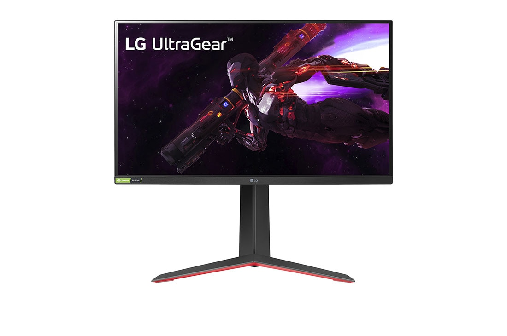
The best 3D printers of 2026, ranked by real reviewers. Bambu Lab P1S Combo leads with pro-grade speed and multi-color printing at a mid-range price.

We analyzed 3 in-depth YouTube reviews (Monitors Unboxed, RTINGS) to find the best 4K gaming monitor in 2026. Top pick, comparison table, pros/cons, and video sources.

We analyzed 4 hands-on reviews from Hipyo Tech, GamingTrend, TechRadar, and Tom's Hardware to find the best 60% keyboard in 2026. Top pick, comparison table, pros/cons, and real review sources.

We analyzed 4 hands-on reviews to find the best budget gaming chair in 2026. Top pick, comparison table, pros/cons, and review sources.
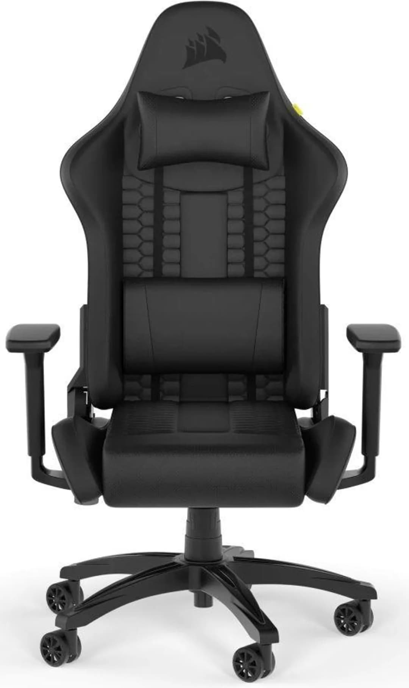
We analyzed 4 in-depth reviews to find the best budget gaming headset in 2026. Top pick, comparison table, pros/cons, and real reviewer sources.

We analyzed 4 hands-on reviews from Laptop Mag, Tom's Guide, Trusted Reviews, and RTINGS to find the best budget mechanical keyboard in 2026. Top pick, comparison table, pros/cons, and real review sources.

We analyzed 4 reviews to find the best budget webcam in 2026. Top pick, comparison table, pros/cons, and video sources.

We analyzed 4 expert reviews to find the best budget wireless gaming mouse in 2026. Top pick, comparison table, pros/cons, and video sources.

We analyzed 3 independent reviews to find the best cable management for desk setups in 2026. Top pick, comparison table, pros/cons, and review sources.

We analyzed 4 real reviewer tests to find the best capture card in 2026. Elgato 4K X is the top pick. Comparison table, pros/cons, and verified sources.
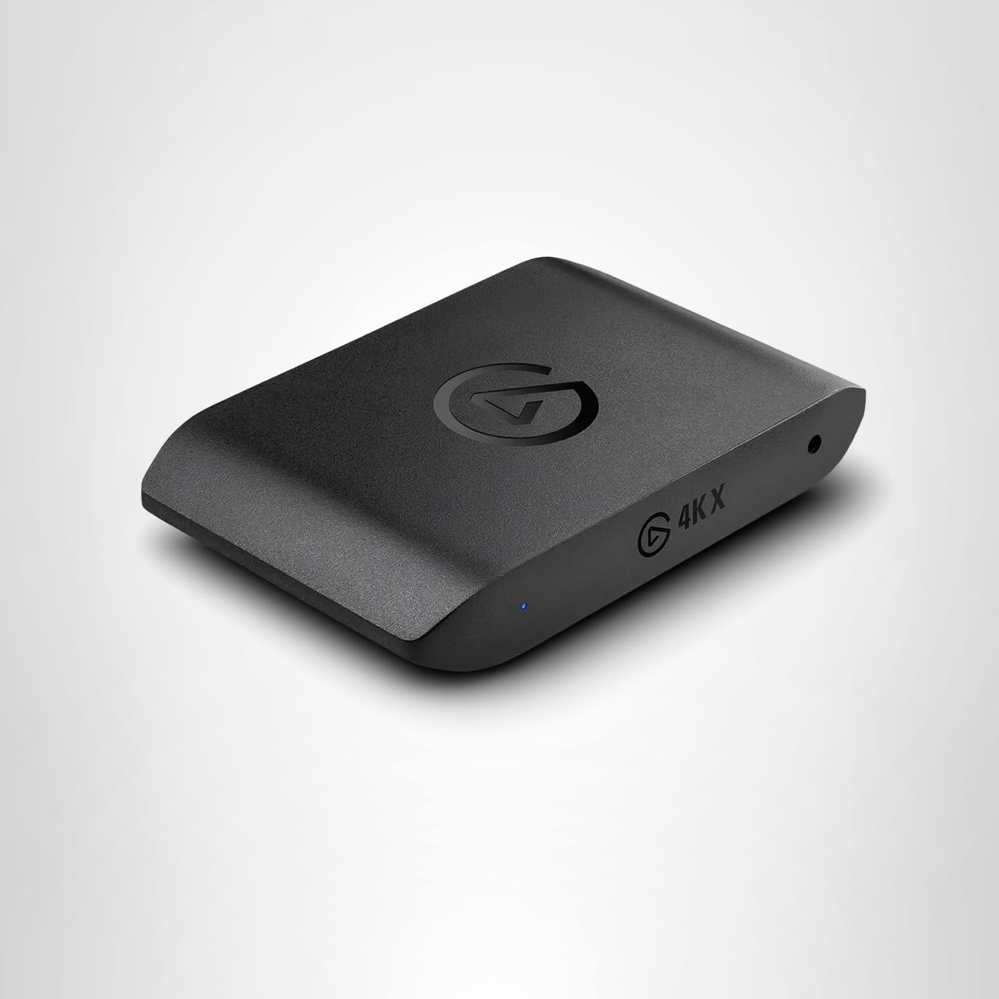
Best monitors for programming in 2026. 4K clarity, USB-C docks, eye-care tech — aggregated from RTINGS and Monitors Unboxed.

We analyzed 5 real reviewer tests to find the best custom keyboard kit in 2026. Keychron Q1 Max is the top pick. Comparison table, pros/cons, and verified sources.
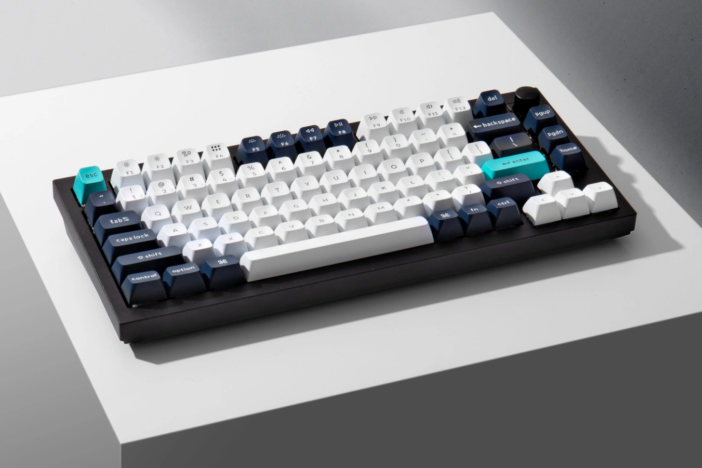
Best fidget toys for developers in 2026. Play while your AI agent codes — magnetic, clicky, satisfying desk toys.
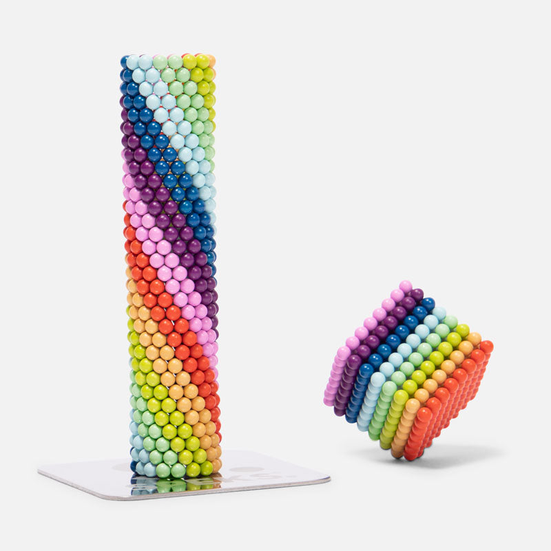
Best eye-care desk lamps for developers in 2026. BenQ ScreenBar, e-Reading lamps — reduce strain during long coding sessions.
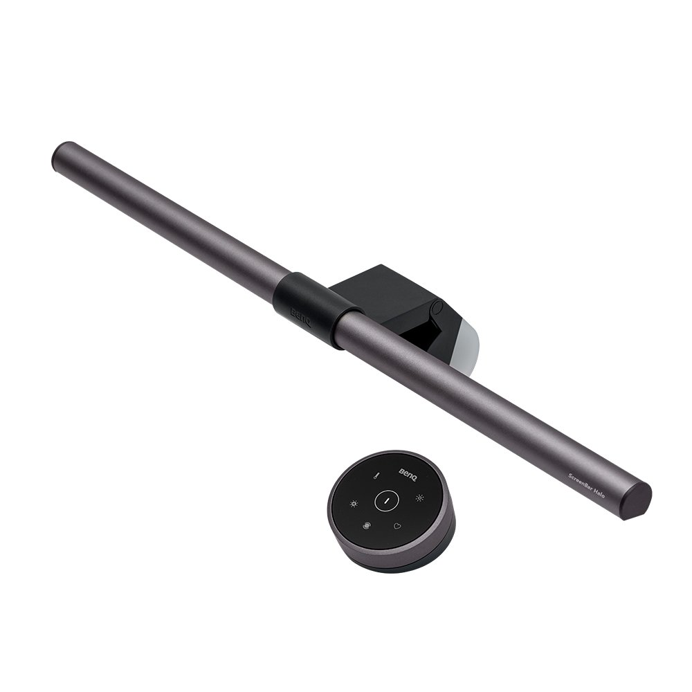
We analyzed 4 reviews to find the best desktop gaming speakers in 2026. Top pick, comparison table, pros/cons, and video sources.

We analyzed 3 tested reviews to find the best dual monitor arm in 2026. Top pick, comparison table, pros/cons, and real reviewer sources.

The best electric scooters for adults in 2026, ranked by real reviewers. Segway Ninebot MAX G3 leads with 50-mile range and 28mph top speed.

We analyzed 4 expert reviews to find the best ergonomic gaming mouse in 2026. Top pick, comparison table, pros/cons, and sources.
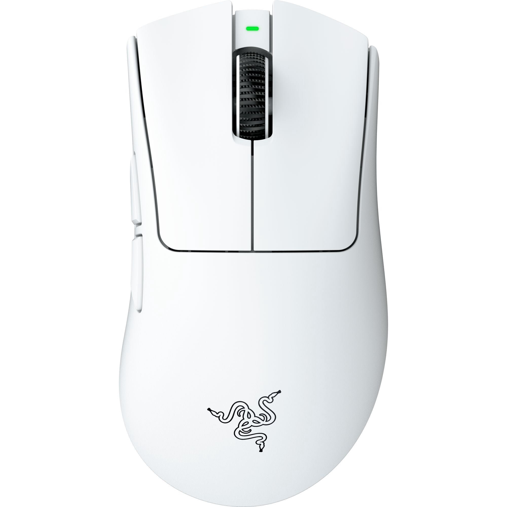
We analyzed 4 hands-on reviews to find the best ergonomic office chair for gaming in 2026. Top pick, comparison table, pros/cons, and review sources.

We analyzed 4 independent reviews to find the best fight stick in 2026. Top pick, comparison table, pros/cons, and review sources.

We analyzed 4 in-depth reviews to find the best flagship gaming headset in 2026. Top pick, comparison table, pros/cons, and real reviewer sources.

We analyzed 4 expert reviews to find the best lightweight FPS gaming mouse in 2026. Top pick, comparison table, pros/cons, and video sources.

We analyzed 4 in-depth reviews to find the best gaming earbuds in 2026. Top pick, comparison table, pros/cons, and real reviewer sources.
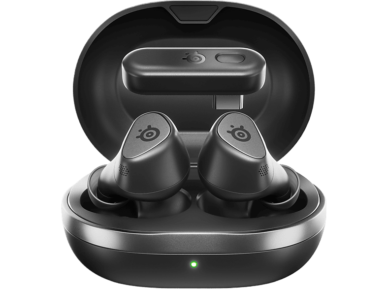
We analyzed 5 in-depth reviews to find the best GPU for running local LLMs in 2026. Top pick, VRAM guide, RAMageddon price warning, and real reviewer sources.

We analyzed 4 hands-on reviews from PCWorld, ProSettings, Tom's Hardware, and iamlxm0 to find the best hall effect keyboard in 2026. Top pick, comparison table, pros/cons, and real review sources.

We analyzed 5 tested reviews to find the best hard gaming mousepad in 2026. Top pick, comparison table, pros/cons, and real reviewer sources.
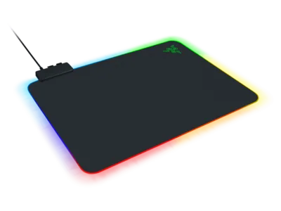
The best 4K home theater projectors of 2026, ranked by real reviewers. Valerion VisionMaster Pro leads with 15000:1 contrast and 4ms gaming response.

We analyzed 4 independent reviews to find the best keyboard wrist rest in 2026. Top pick, comparison table, pros/cons, and review sources.

Best laptop stands for developers in 2026. Rain Design mStand, Nulaxy — ergonomic, sturdy, great for home office.
We analyzed 4 reviews to find the best lavalier microphone in 2026. Top pick, comparison table, pros/cons, and video sources.

Best programmable macro keypads for AI workflows in 2026. Stream Deck, X-keys — one-key triggers for agents and shortcuts.
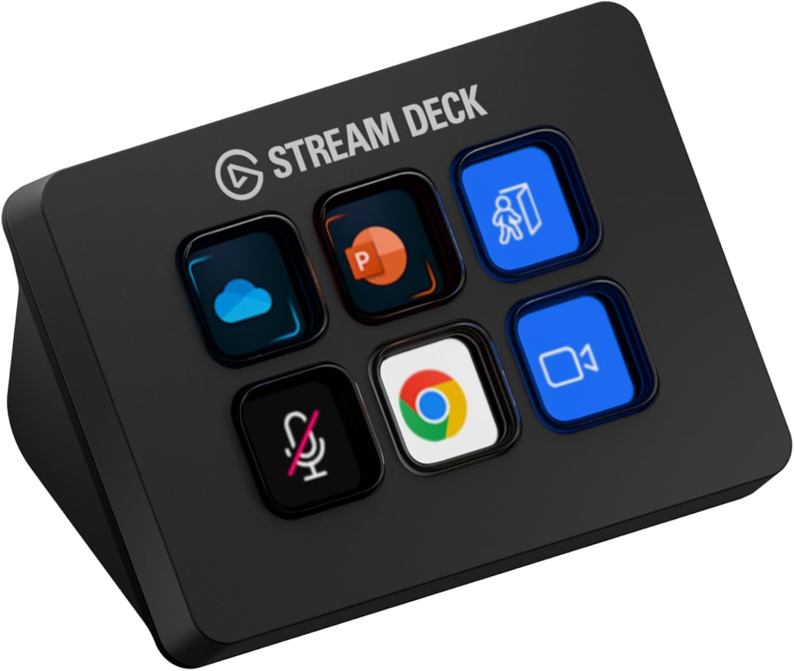
We analyzed 4 hands-on reviews to find the best mid-range gaming chair in 2026. Top pick, comparison table, pros/cons, and review sources.
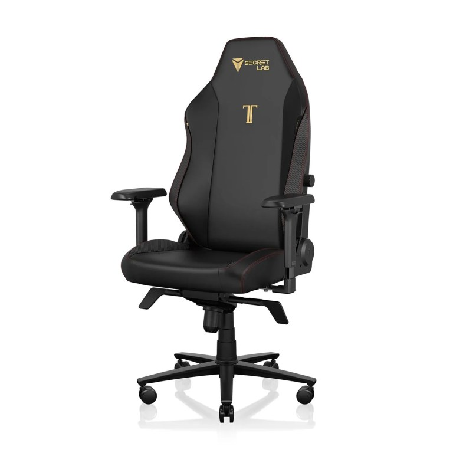
We analyzed 4 expert reviews to find the best MMO gaming mouse in 2026. Top pick, comparison table, pros/cons, and sources.

We analyzed 4 independent reviews to find the best monitor light bar in 2026. Top pick, comparison table, pros/cons, and review sources.
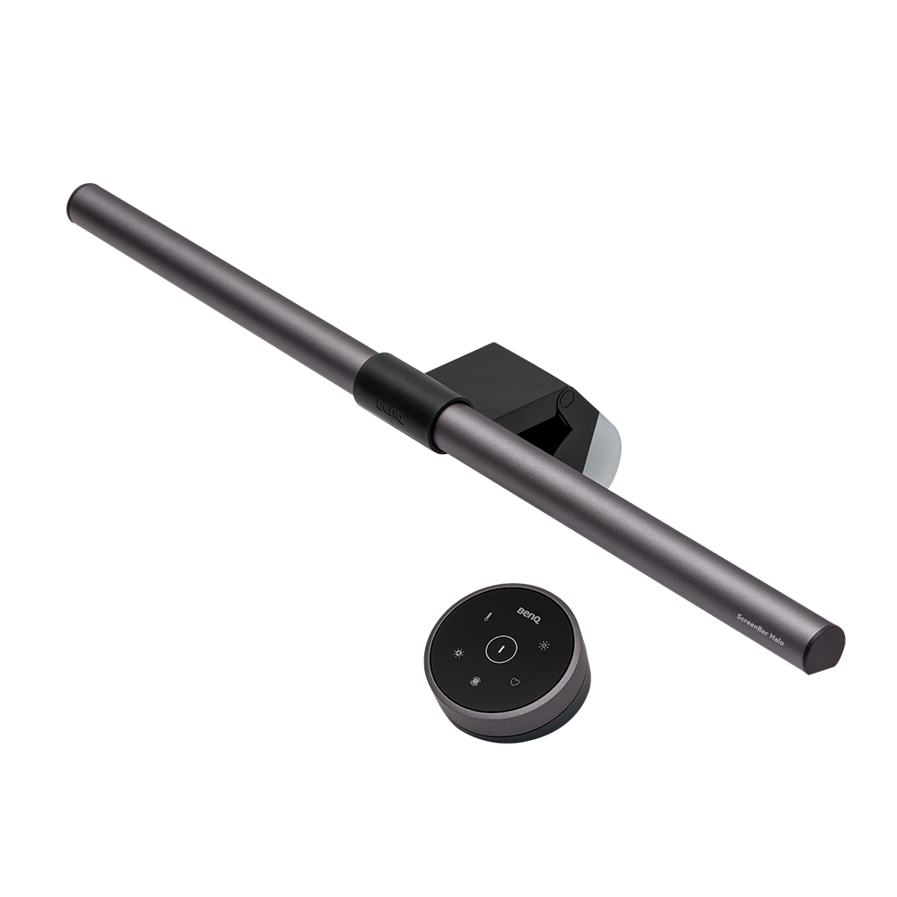
Best NAS for home lab and developers in 2026. Synology, UGREEN — centralized storage, Docker, self-hosting.
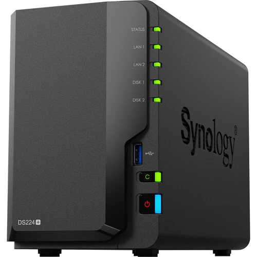
Best noise cancelling headphones for focus and deep work in 2026. Sony XM5, Bose QC Ultra — aggregated from RTINGS and audio reviewers.
We analyzed 3 in-depth YouTube reviews (Monitors Unboxed, SpawnPoiint) to find the best OLED gaming monitor in 2026. Top pick, comparison table, pros/cons, and video sources.
We analyzed 3 in-depth reviews to find the best open-back headphones for gaming in 2026. Top pick, comparison table, pros/cons, and real reviewer sources.
We analyzed 4 independent reviews to find the best PC game controller in 2026. Top pick, comparison table, pros/cons, and review sources.

Best portable monitors for developers in 2026. ASUS ZenScreen, Lenovo ThinkVision — USB-C second screens for coding anywhere.
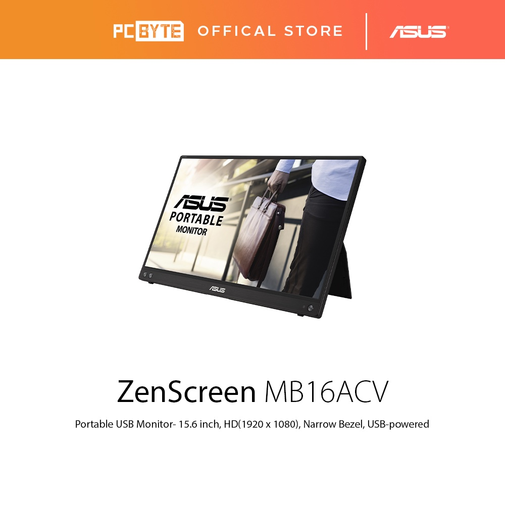
The best portable power stations of 2026, ranked by real reviewers. EcoFlow DELTA 3 leads with 56-minute fast charging and 5kWh expandability.

Best portable SSDs for developers in 2026. Samsung T9, SanDisk Extreme, Crucial X10 — fast, rugged, reliable.
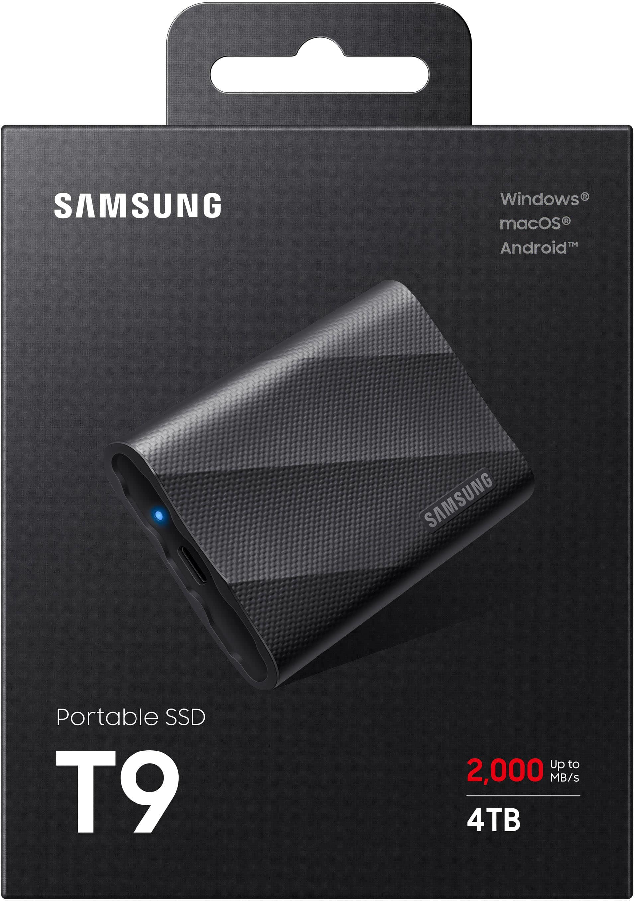
We analyzed 4 hands-on reviews from PCWorld, RTINGS, BadSeed Tech, and TechRadar to find the best quiet keyboard for office use in 2026. Top pick, comparison table, pros/cons, and real review sources.
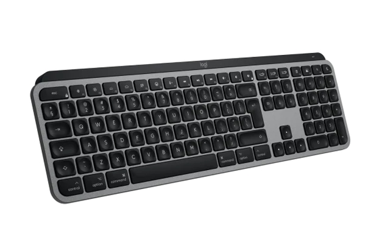
We analyzed 5 independent reviews to find the best retro game controller in 2026. Top pick, comparison table, pros/cons, and review sources.

We analyzed 4 tested reviews to find the best RGB gaming mousepad in 2026. Top pick, comparison table, pros/cons, and real reviewer sources.

The best robot vacuums of 2026, ranked by real reviewers. Dreame X60 Max Ultra Complete leads with industry-leading suction and AI navigation.

We analyzed 3 tested reviews to find the best single monitor arm in 2026. Top pick, comparison table, pros/cons, and real reviewer sources.

The best smart locks of 2026, ranked by real reviewers. Schlage Encode Plus leads with Apple Home Key, built-in Wi-Fi, and BHMA Grade 1 security.

Best split ergonomic keyboards for programmers in 2026. Kinesis, ZSA, Dygma — aggregated from keyboard reviewers.
Best standing desks for developers in 2026. UPLIFT, FlexiSpot, IKEA — aggregated from reviewer testing.
We analyzed 4 real reviewer tests to find the best stream deck in 2026. Elgato Stream Deck MK.2 is the top pick. Comparison table, pros/cons, and verified sources.
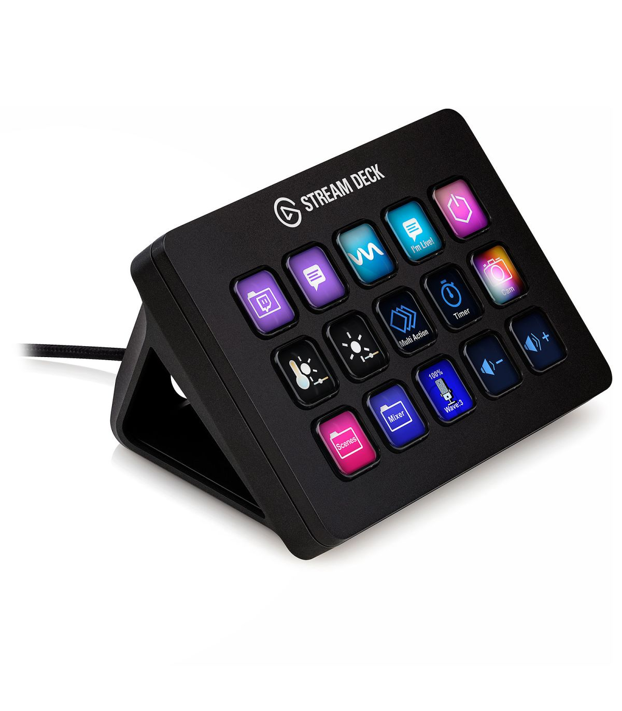
We analyzed 4 real reviewer tests to find the best key light for streaming in 2026. Elgato Key Light is the top pick. Comparison table, pros/cons, and verified sources.

We analyzed 4 reviews to find the best webcam for streaming in 2026. Top pick, comparison table, pros/cons, and video sources.

We analyzed 4 hands-on reviews from PCWorld, Laptop Mag, ProSettings, and Eurogamer to find the best TKL gaming keyboard in 2026. Top pick, comparison table, pros/cons, and real review sources.
We analyzed 3 in-depth YouTube reviews (Monitors Unboxed, SpawnPoiint, Geek Street) to find the best ultrawide gaming monitor in 2026. Top pick, comparison table, pros/cons, and video sources.

Best USB-C and Thunderbolt docking stations for developers in 2026. CalDigit, Dell, Anker — single-cable desk setups.
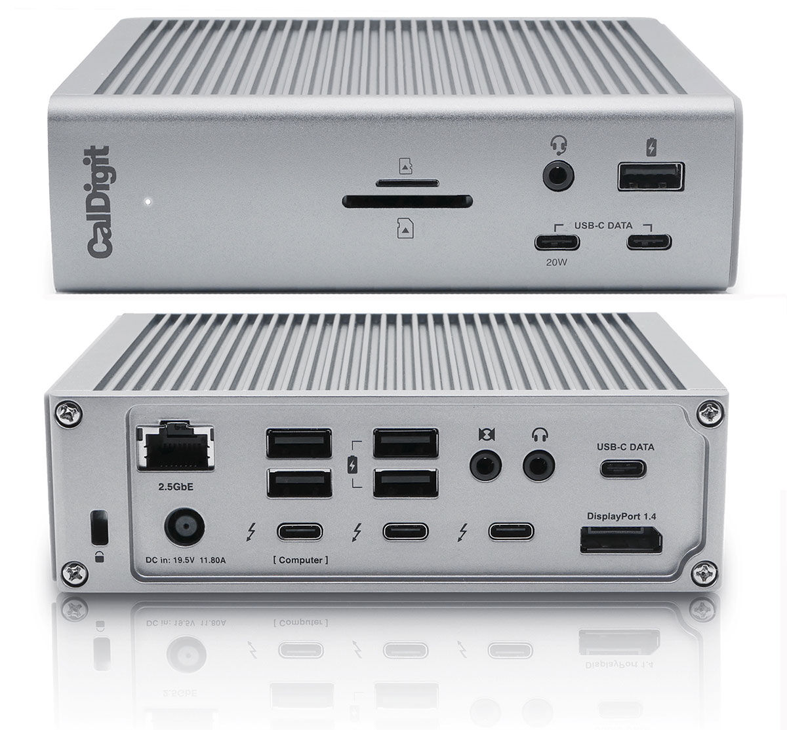
We analyzed 4 YouTube reviews to find the best USB DAC for gaming in 2026. Top pick, comparison table, pros/cons, and video sources.

Best USB foot pedals for push-to-talk in 2026. Talk to AI hands-free while coding — iKKEGOL, Scythe tested.
We analyzed 4 reviews to find the best USB microphone for streaming in 2026. Top pick, comparison table, pros/cons, and video sources.

Best WiFi routers for home office in 2026. ASUS, TP-Link — stable, fast, great for remote developers.
We analyzed 4 in-depth reviews to find the best wireless gaming headset in 2026. Top pick, comparison table, pros/cons, and real reviewer sources.
We analyzed 4 hands-on reviews to find the best wireless gaming mouse in 2026. Top pick, comparison table, pros/cons, and review sources.
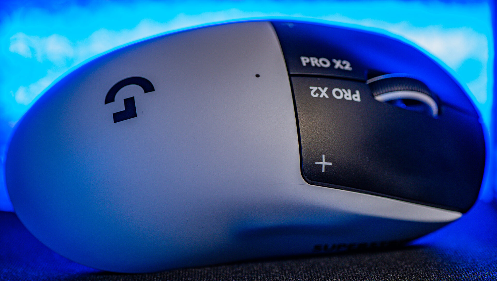
We analyzed 3 hands-on reviews to find the best wireless mechanical keyboard in 2026. Top pick, comparison table, pros/cons, and review sources.

We analyzed 4 expert reviews to find the best mouse for work and gaming in 2026. Top pick, comparison table, pros/cons, and sources.

We analyzed 4 tested reviews to find the best XL gaming mousepad in 2026. Top pick, comparison table, pros/cons, and real reviewer sources.
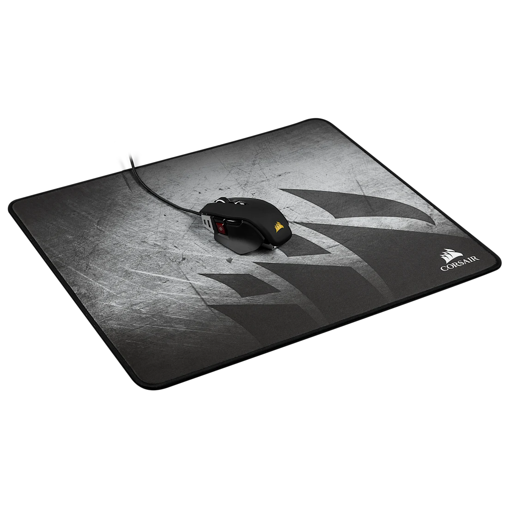
We analyzed 4 reviews to find the best XLR microphone kit for streaming in 2026. Top pick, comparison table, pros/cons, and video sources.